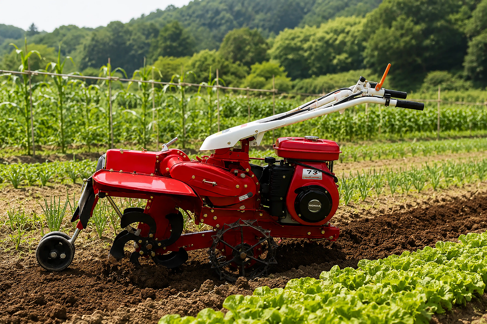
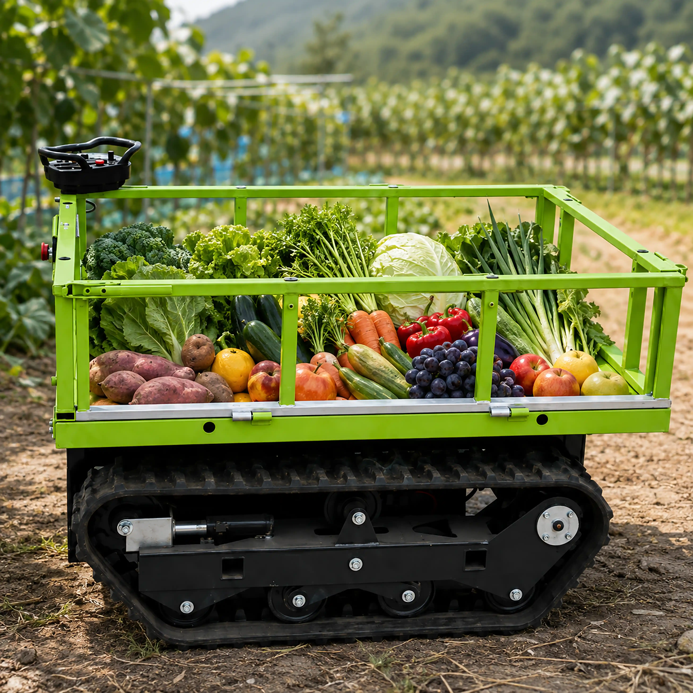
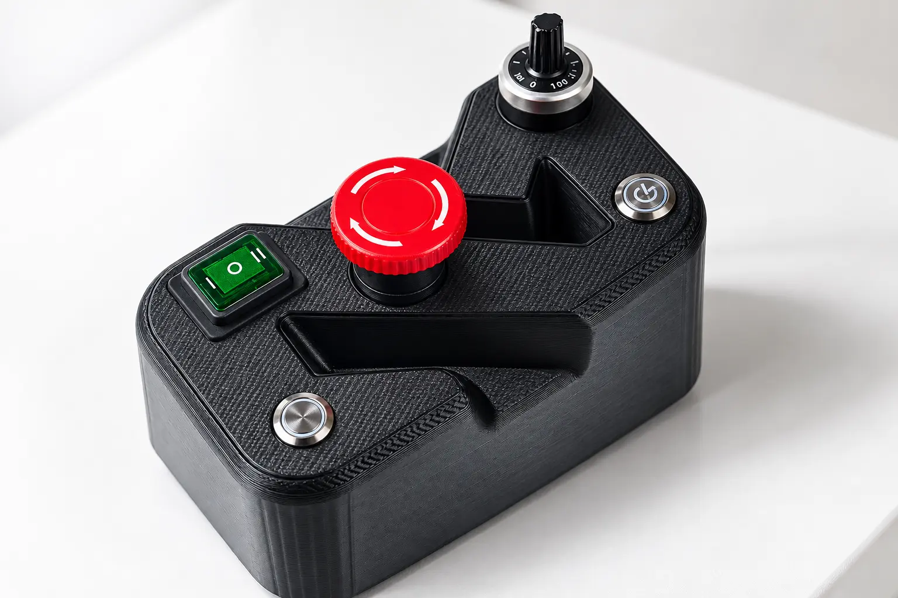
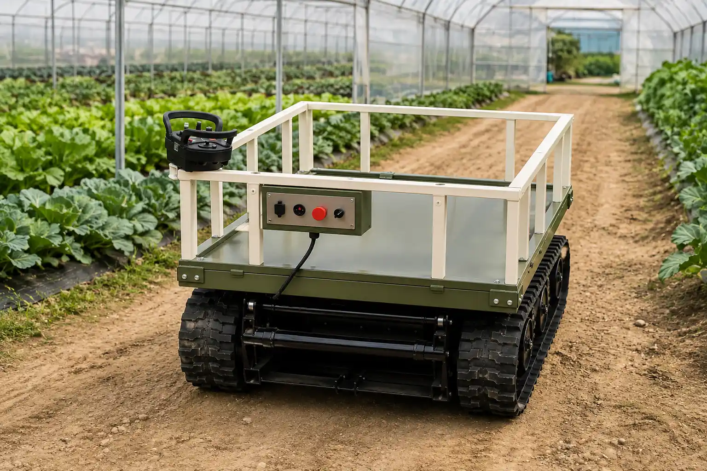
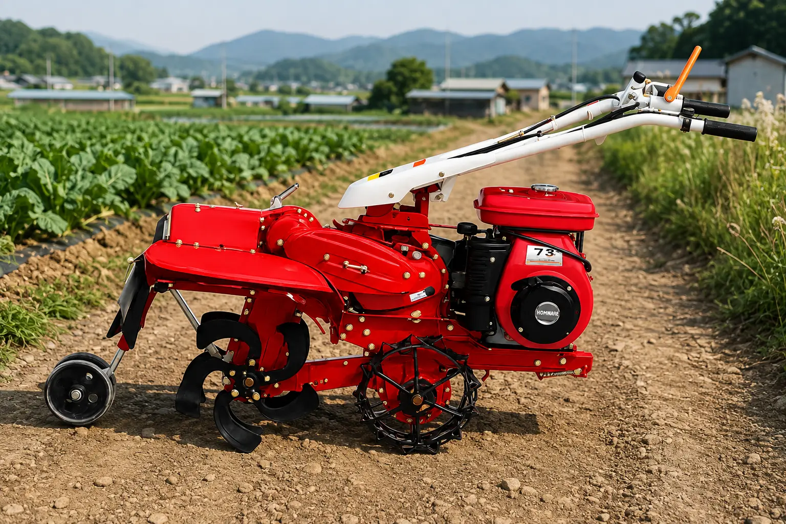
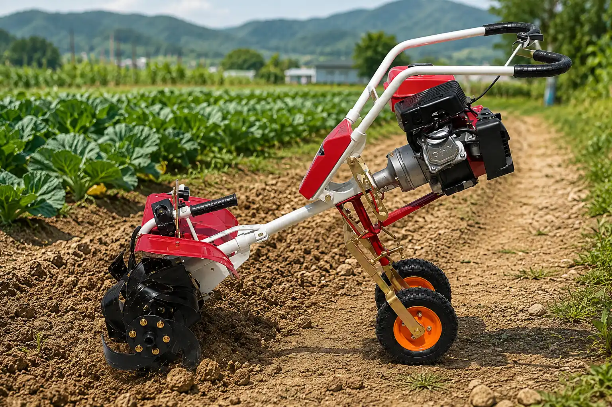

#노지스마트팜
#6차산업 #플랫폼
농업 경영인의 건강한 시작부터 지속가능한 결실까지, 팜이오가 함께합니다.
식물공장
외부 환경의 영향 없이 최적의 생육 조건에서 작물을 연중 안정적으로 대량 생산할 수 있는 첨단 재배 솔루션입니다.
스마트팜
정보통신기술(ICT)을 접목하여 작물의 생육 환경을 원격으로 정밀 제어하고 최적화하는 지능형 시스템을 구축합니다.
자율주행
자율주행 트랙터 및 드론 방제 등 인공지능(AI) 기반 첨단 무인 농기계를 도입하여 농작업의 효율성과 편의성을 극대화합니다.


ABOUT US
농업의 새로운 미래,
팜이오와 함께하세요.
팜이오(Farm + IO)는 농업경영인의 건강한 활동을 위해 현장에 필요한 첨단 기술과 제품을 고민하며, 농업에 필요한 것을 채우고 그 가치를 키워가는 든든한 파트너입니다.
- 기후 제약 없는 첨단 식물공장 솔루션
- ICT 기반 지능형 정밀 스마트팜 시스템
- 인공지능 무인 자율주행 농기계 라인업
PRODUCTS
Farmio's Lineup
농업의 모든 순간을 위한 선택
최신 기술과 신뢰할 수 있는 제품으로 농업 생산성을 극대화합니다.
ON나
힘쓰는 운반 작업은 그만! 더 정교한 주행, 더 안전한 제어!

FarmX
농자재 운반은 물론 다양한 작업기 결합을 통해 농작업을 수행!

FarmT
밭부터 과수원까지, 다양한 농작업을 한 대로!

FarmM
좁은 밭과 과수원까지, 작지만 다양한 농작업을 한 대로!
